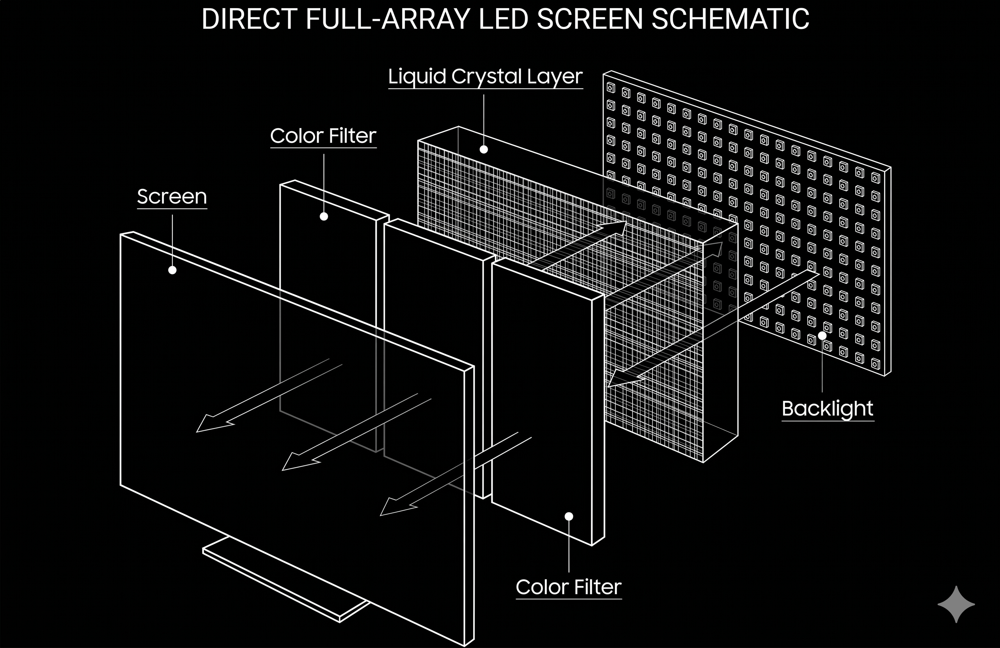
Modular emissive panels composed of individual LEDs grouped into pixels. Each LED produces its own light and color — no backlight required.
Standard for virtual production volumes (e.g. "The Mandalorian") due to intense brightness, real-time reflections, and seamless scalability.
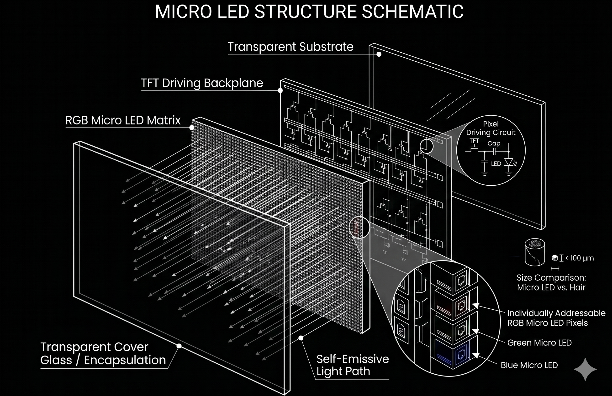
Ultra-fine, microscopic LEDs forming individual sub-pixels. Offers infinite contrast of OLEDs without organic degradation or burn-in risk.
Current apex of flat-panel technology: extreme longevity combined with unparalleled brightness for premium commercial and architectural use.
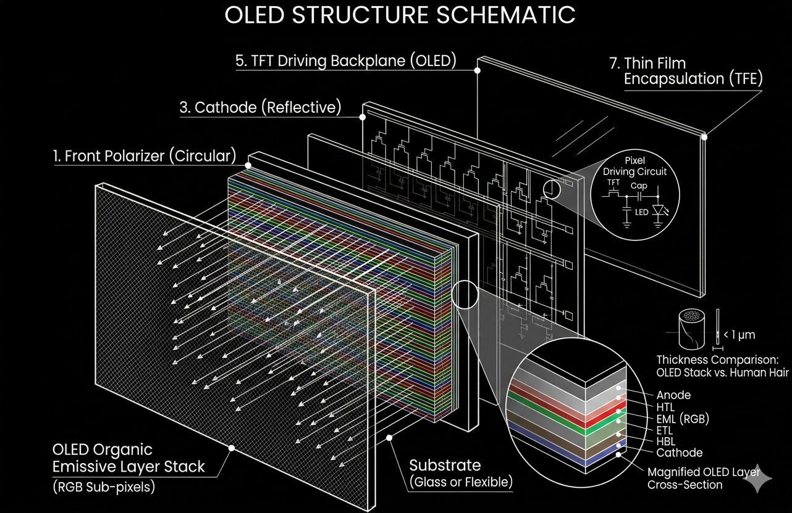
Self-emissive organic films that glow on electrical current. Pixels can be completely turned off, achieving true black and infinite contrast.
Thin, flexible nature enables rollable and bendable architectural display concepts beyond traditional flat panel applications.

OLED or LED arrays on transparent substrates. Off pixels function as clear glass; activated pixels make imagery appear suspended in mid-air.
Used in retail, museums, and architectural partitions where sightlines and spatial continuity must be maintained.
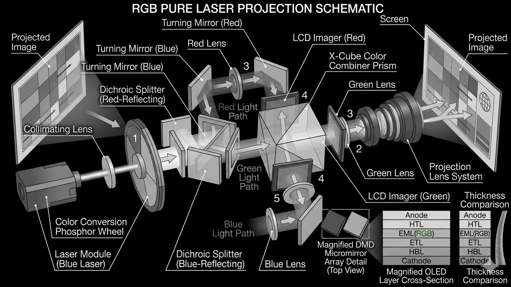
High-lumen projectors replacing xenon lamps with solid-state laser sources routed through DLP or LCD imaging chips.
Eliminates lamp replacements, expands color gamuts, and allows projectors to be mounted at any angle without thermal failure.
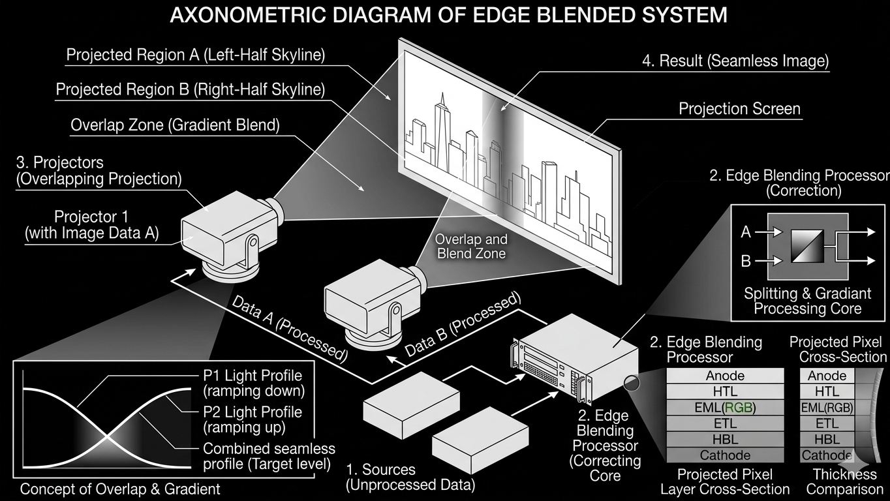
Multiple overlapping projectors combined into a single continuous widescreen image. Software feathers overlapping edges to hide seams.
Foundational technique for large-scale immersive environments and panoramic theatrical backdrops.
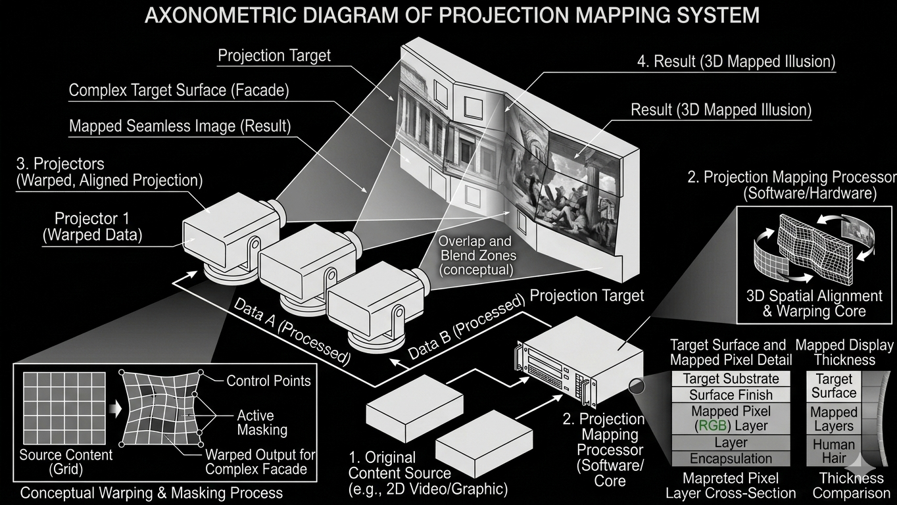
Physical 3D objects turned into display surfaces. Software warps and masks projected imagery to align perfectly with complex geometry.
Exploded into architectural spectacle in the 2010s, transforming how static urban facades are perceived at night.
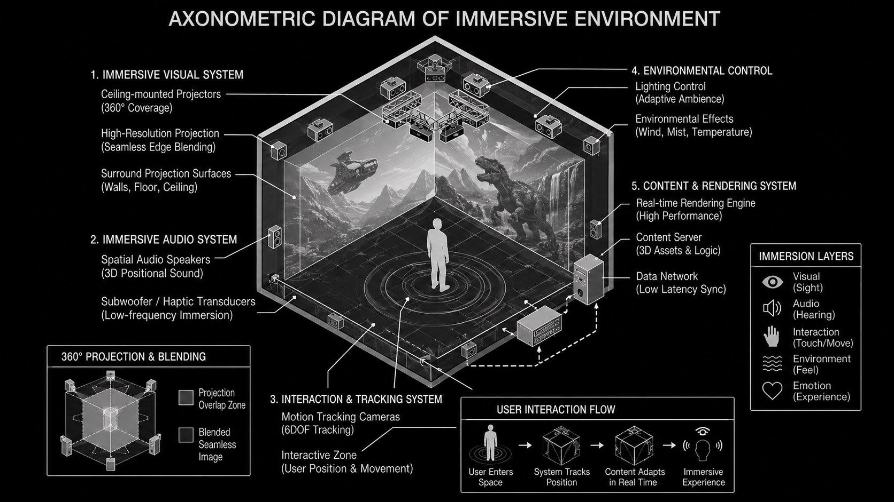
Continuous wall, floor, and ceiling projection fields that physically enclose the viewer, creating spatial presence without headsets.
Entered cultural mainstream in the late 2010s via widespread immersive art exhibitions, rooted in 1990s CAVE research systems.
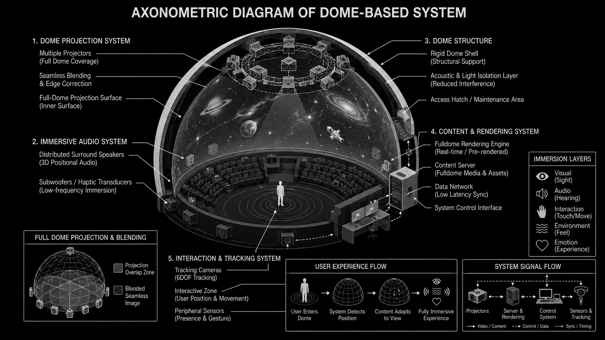
Projection onto hemispherical surfaces using fisheye lenses or multi-projector blends, creating fully enveloping ceiling-bound image fields.
Transitioned from analog planetariums to digital fulldome in the 2000s, opening to experimental media art and spatial narrative.
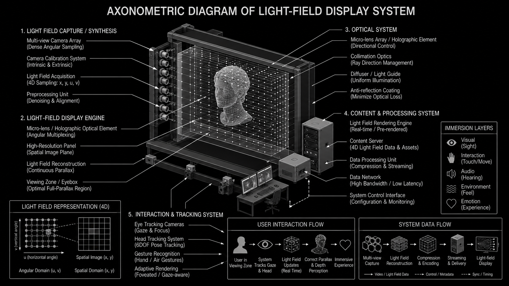
Displays emitting multiple light rays per pixel in different directions — parallax-correct volume allows head movement to reveal 3D depth without glasses.
Functional prototypes emerged in the late 2010s, pushing toward the holographic screens of science fiction.
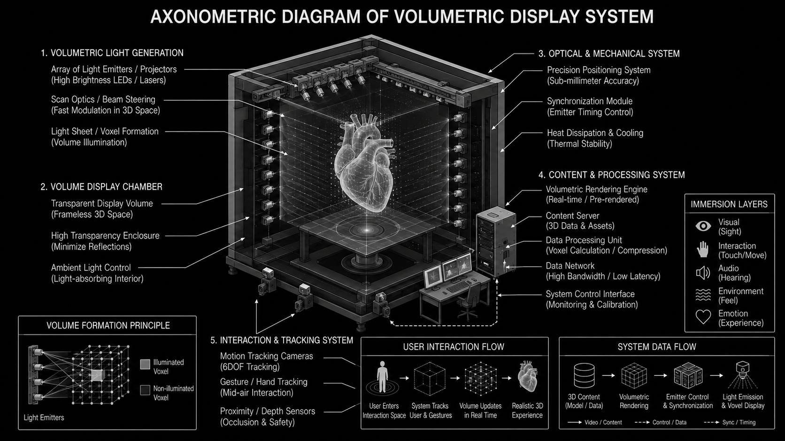
3D imagery via voxels within physical space — often via rapidly spinning screens (swept-volume) or lasers intersecting in specialized gases.
Largely experimental, limited by physical mechanics and immense real-time data rendering requirements.
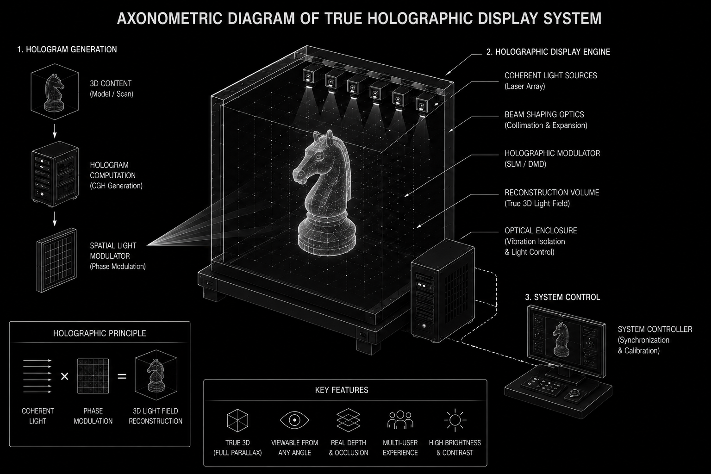
Wavefront reconstruction using laser interference patterns to recreate exact physical light waves bouncing off real objects.
Real-time dynamic digital holography remains one of the ultimate unresolved frontiers of display technology.
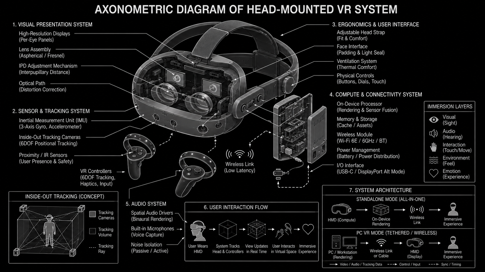
Opaque stereoscopic headsets blocking the physical world entirely, replacing it with a digitally rendered environment tracked to head movements.
Achieved critical consumer viability in the 2010s, reshaping gaming and architectural pre-visualisation.
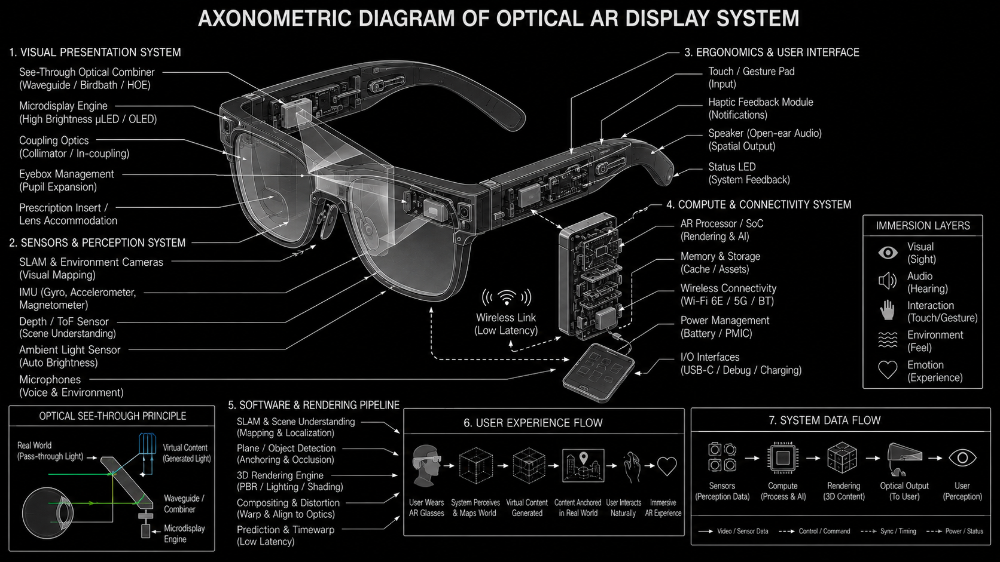
See-through systems using transparent glass waveguides. Projectors shoot light into lens edges, bouncing into the eye and overlaying digital data on real views.
Pioneered for enterprise and military in the 2010s; field-of-view limits have slowed wider consumer adoption.
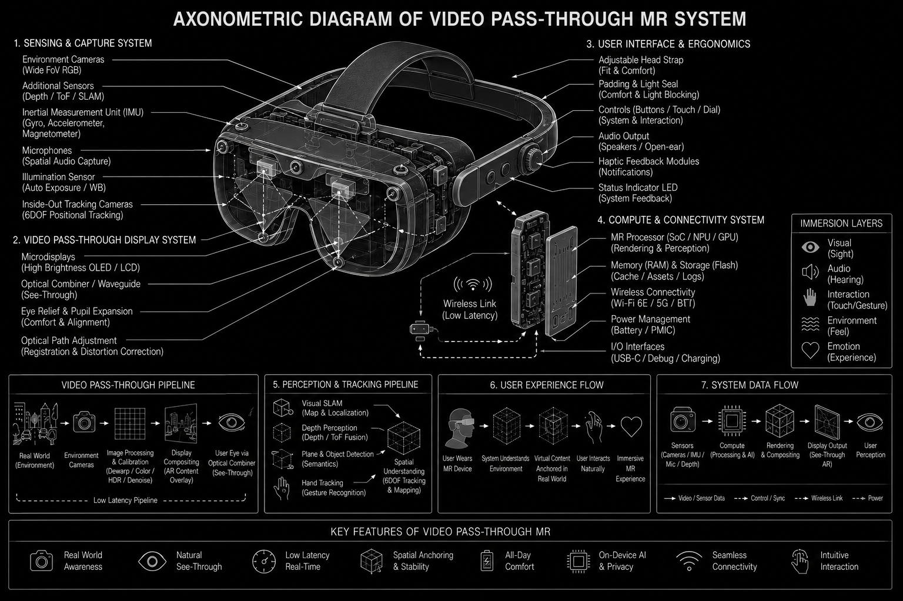
Closed-view headsets with high-resolution exterior cameras feeding real-time video to interior screens with 3D elements inserted digitally.
Gained major traction in the 2020s (Apple Vision Pro, Meta Quest 3) — bypasses optical limits of transparent glass for high-contrast mixed reality.
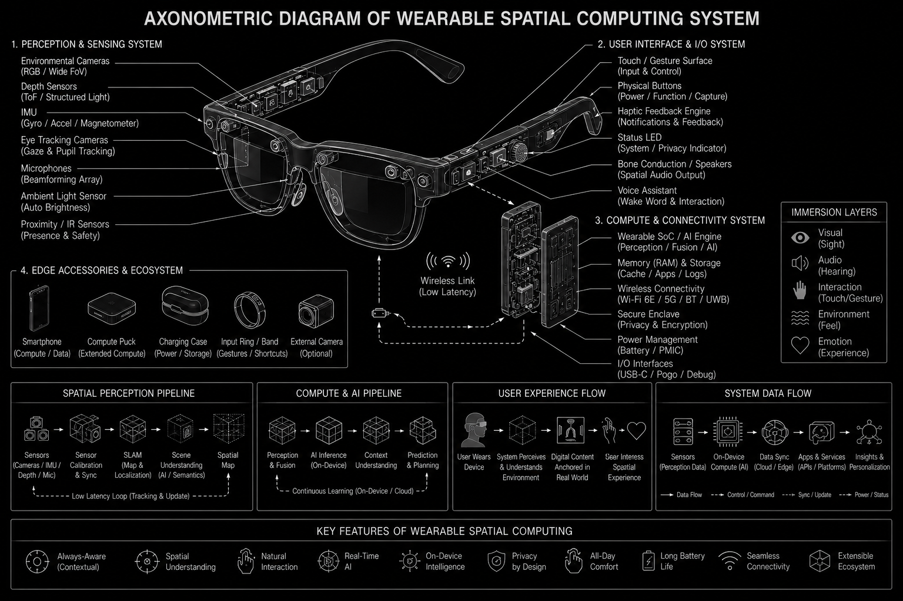
Lightweight glasses-form-factor devices providing standalone AR or MR without bulky tethered computing — merging digital interfaces with daily spatial perception.
The ambition: replace the smartphone by dissolving the 2D screen entirely into the physical environment.